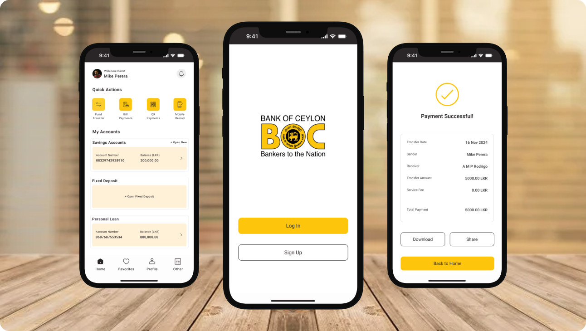
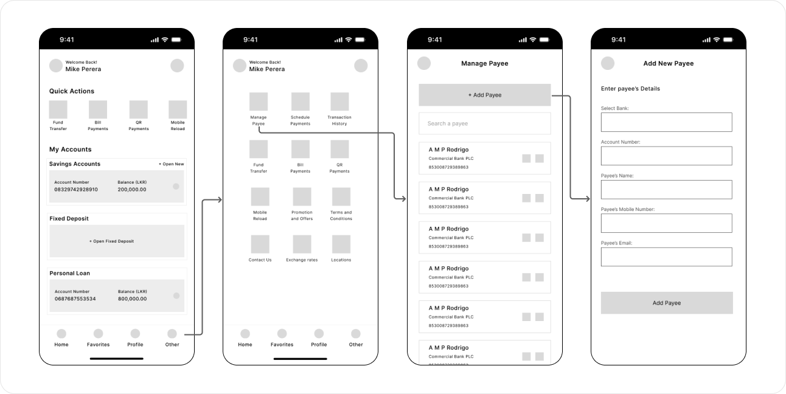

Improved 4 key features of the BOC mobile app to reduce user confusion
This case study was done to analyze the mobile banking app of Bank of Ceylon (BOC) which is a leading bank in Sri Lanka. The analysis was done to identify the customer pain points based on the customer reviews in Apple App Store.
Through a combination of product analysis, competitor analysis and user research, strategic product enhancements were proposed to provide a better user experience and support the business to achieve their goals in terms of improving user acquisition, engagement and retention.
My Role
- UX Designer
Problem Statement
BOC mobile banking users need a more seamless and flexible way to manage their banking tasks because the app currently has a frustrating login process and lacks key features like fixed deposit creation, saving payee details, and cancelling scheduled transactions, which leads to reduced engagement and a shift to competitor apps.
Research and Problem Identification
- Conducted user research by reviewing and analyzing user feedback for BOC Mobile Banking App (B App) via Apple App Store.
- Reviewed 100 feedbacks sorted by most recent feedback (last 12 months).
- The majority of users rated the app with 1 star.
- According to my analysis, 82 feedbacks out of 100 are with 1 star rating.
- Analyzed the customer feedbacks and identified 4 areas of improvement that affect user experience, user acquisition, engagement and retention.
User Feedback

Existing Design

Competitor Analysis
For the competitor analysis HNB Digital Banking App and NSB Pay App were selected. Which are the apps introduced by two other leading banks in Sri Lanka. HNB Digital Banking App has 4.4 rating, and NSB Pay App has 4.0 rating, where the BOC Mobile Banking App has only 3.0 rating in the Apple App Store. During this competitor analysis, the strengths and weaknesses of the competitor apps and the BOC mobile banking app were addressed.
User Personas
User personas were created by considering demographics and characteristics of users to understand their pain points, goals and needs.


Existing User Journey

Proposed Solution
- This is more secured as well as quick and easy methods in app login, which will enhance user experience.
- With that user acquisition will get increased, which ultimately benefit the company to achieve their goals.
- This will increase user engagement since they can create their fixed deposit account on the go.
- In the long run, this will increase user retention and ultimately benefit the company in achieving their goals.
- The recommended method will provide a better user experience, where the user can make their transactions quickly.
- This leads to increased user engagement and retention, which ultimately benefit the company to achieve their goals.
- Once a customer schedules a transaction, give them the option to cancel the transaction if they want.
- This will provide a better user experience, which leads to increased user engagement and retention.
- Therefore, adding this feature will benefit the company in the long run.
Ideate the Solution
User Flow

Design and Prototype
Wireframes
Design
1. Login with Face ID
- This is more secure as well as a quick and easy method compared to the existing process.


2. Smart Fixed Deposit Creation
- This feature will increase user engagement and user satisfaction because they can create a fixed deposit virtually without going to the bank physically.

3. Save Payee Details
- This feature allows the users to save the payee details and use them when needed without entering the same payee details from time to time. This saves users valuable time.

4. Cancel Scheduled Transactions
- As identified during the user research, once a customer schedule a transaction they can't cancel it through the app. The user need to visit the bank physically to get it done. Therefore this option make the user's life easier.

Usability Test and Validate
My Learnings
- Understanding users helped find real problems.
- Looking at competitors helped you see industry standards and gave ideas to make the app better.
- Creating user journeys and personas helped keep the design focused on what users need.
- Using research to add features like Face ID login and easy fixed deposit creation made the app easier to use and more trustworthy.
- The whole process helped me learn to think about the big picture, balancing business goals, technical limits, and what users want.